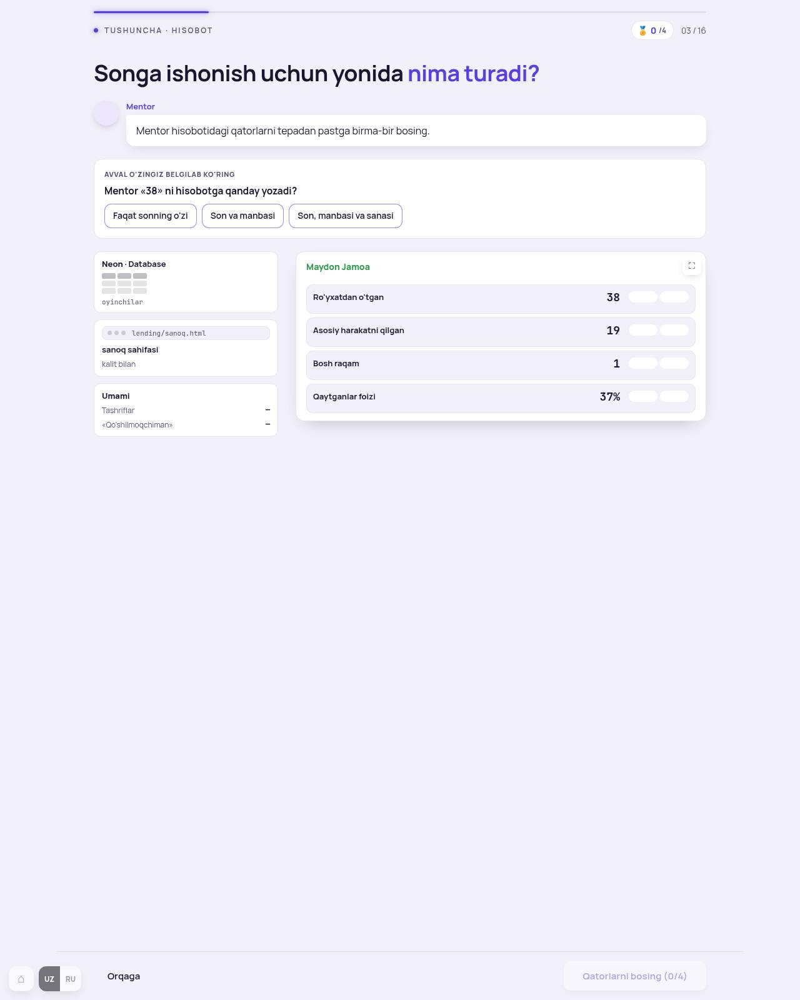
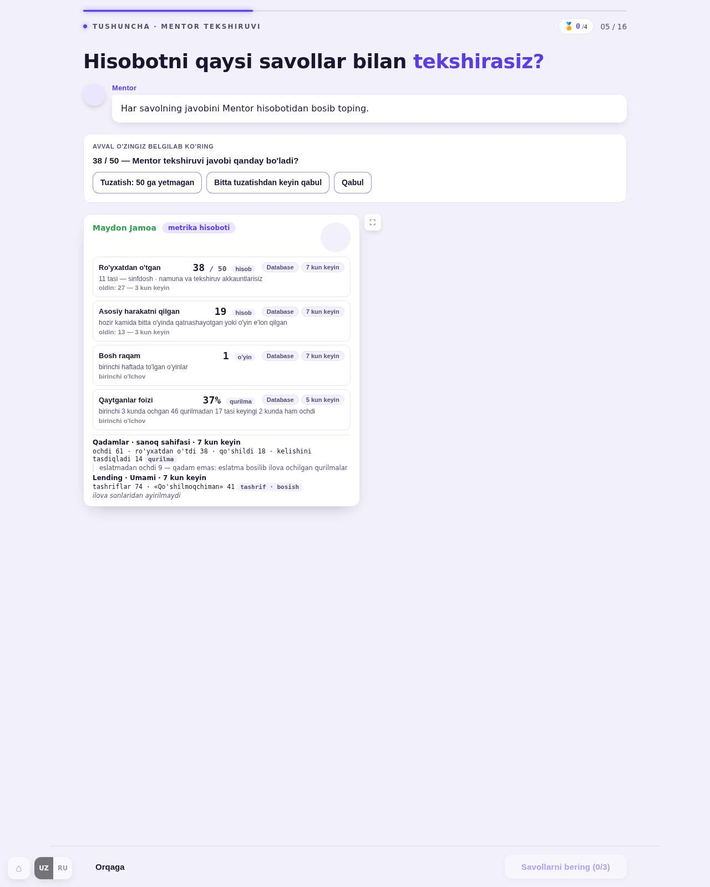
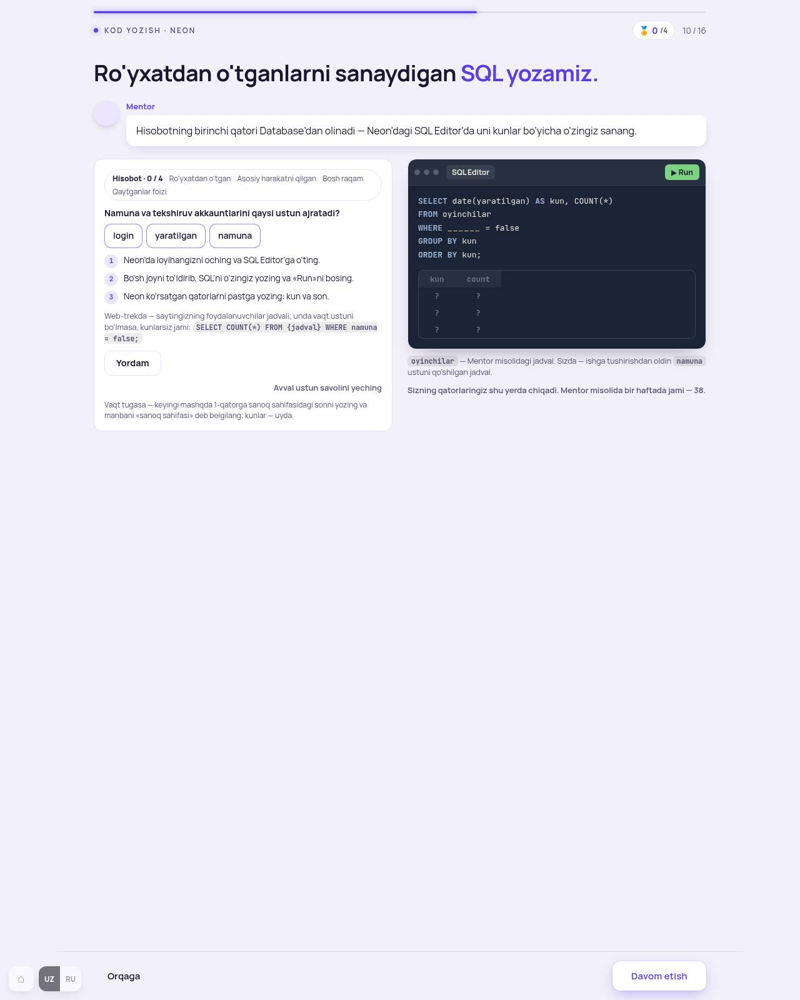
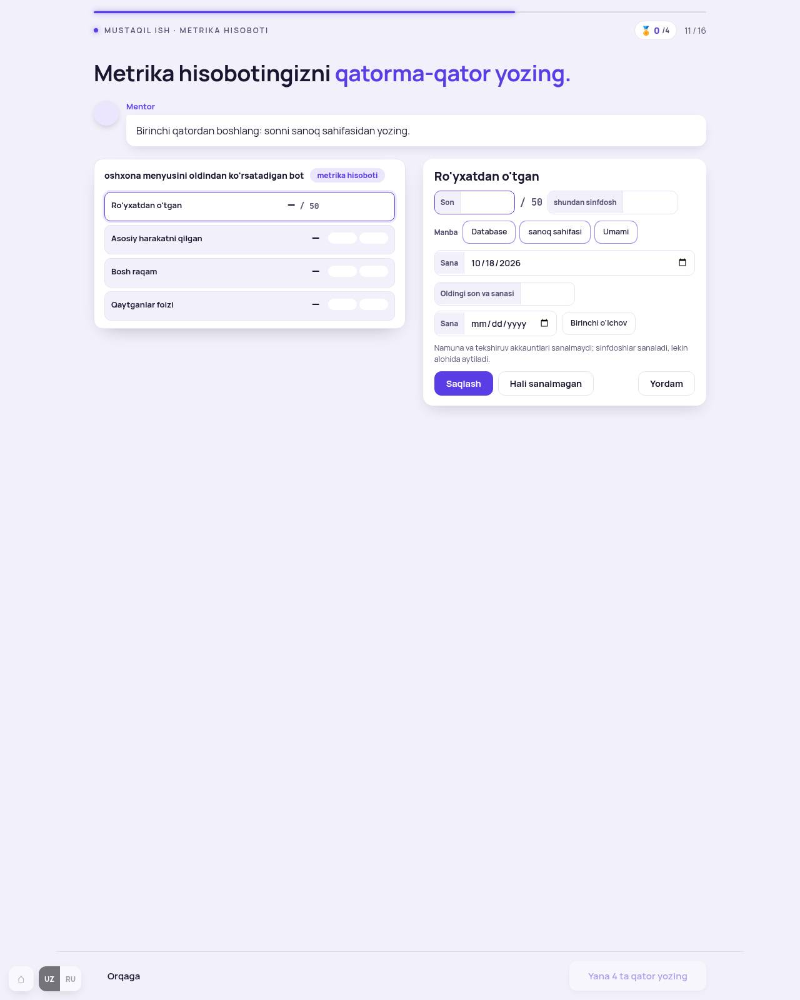
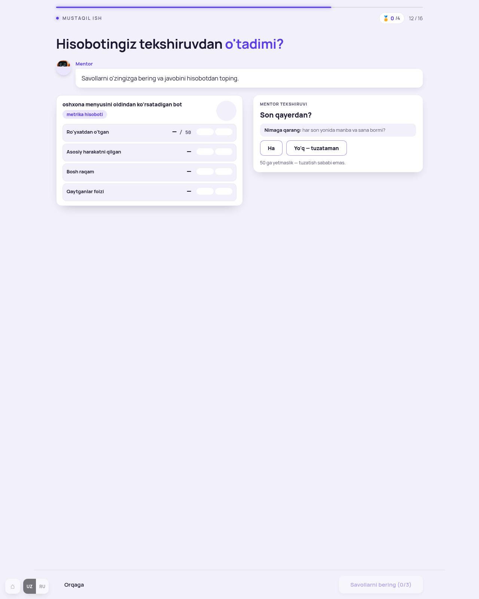
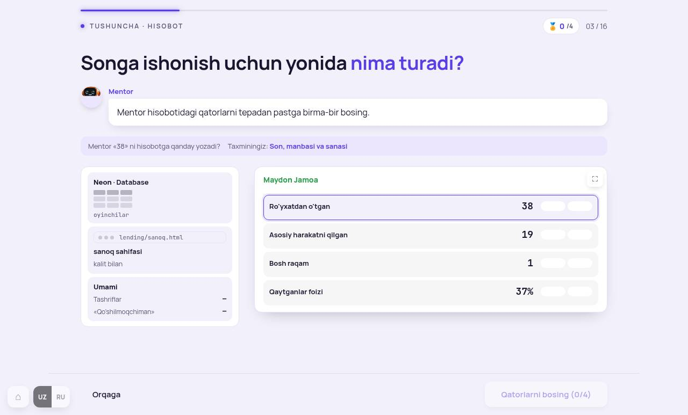
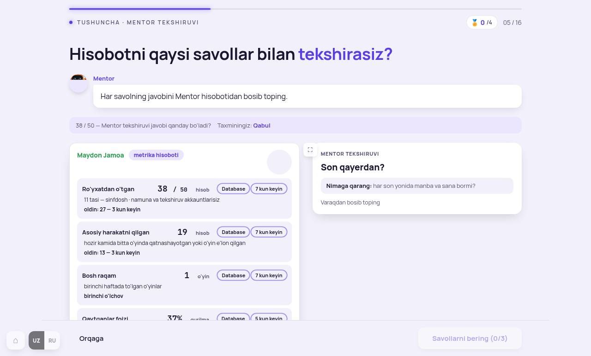
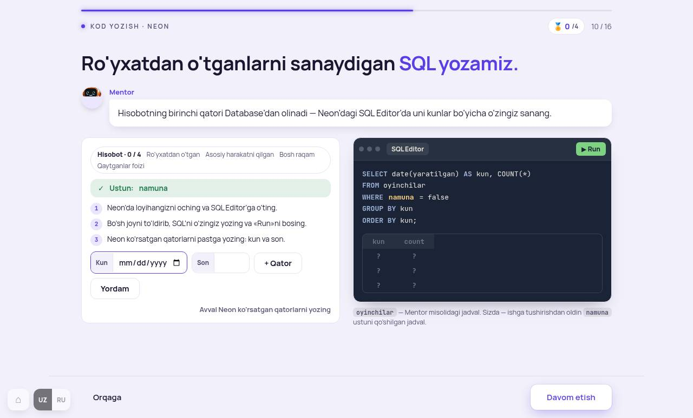
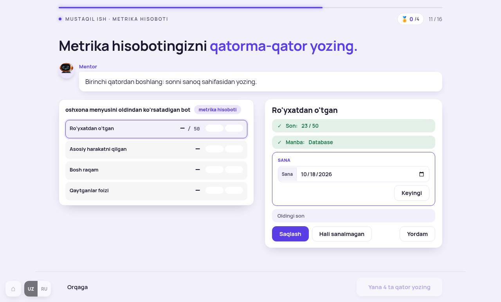
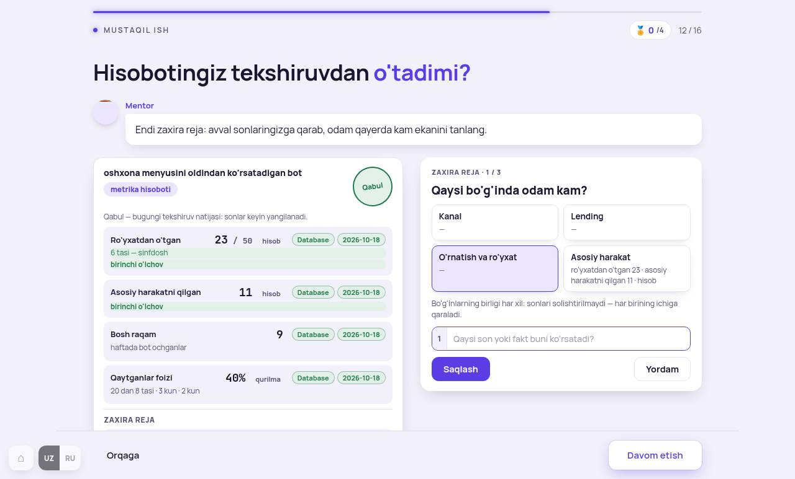

Dars oxirida o'quvchi: o'z mahsulotining metrika hisobotini to'rt qatorda yozadi (son · manba · sana), uni Mentor tekshiruvidan o'tkazadi va 50 ga yetmagan bo'lsa zaxira reja yozadi.
O'lchov ro'yxatida 5 ekran bor edi. Ko'rib chiqdim: 4 tasida o'zgarish kerak, 1 tasi (11-ekran) deyarli to'g'ri. Har bandda A — tavsiyam. Hech narsa hali o'zgartirilmagan.

Tashxis. «Avval o'zingiz belgilab ko'ring» kartasi bilan birga chapda 3 ta alohida chegarali manba kartasi (Neon, sanoq sahifasi, Umami) va o'ngda hisobot turibdi. O'quvchi taxmin qilmasdan javobni ko'rib turadi (213.7). Manbalar — 3 ta mustaqil ramkali quti (213.3: bir ekranda bitta chegarali karta).

Tashxis. Taxmin kartasi va to'liq Mentor hisoboti (4 qator + «Qadamlar» + «Lending» matni, 946 belgi) bir vaqtda. Hisobot ichida har qator alohida oq ramkali quti — karta ichida karta (213.3). Savol kartasi (o'ngda) taxmindan keyin chiqadi — bu to'g'ri.
To'liq hisobot bu ekranda kerak: o'quvchi uch savolning javobini hisobotdan bosib topadi. Shuning uchun hisobot qisqarmaydi, faqat tartib va ko'rinish.

Tashxis. Birinchi ish — ustun savoli (login / yaratilgan / namuna). U yechilmaguncha 1–2–3 qadamlar, web-trek SQL izohi, Yordam tugmasi, «Avval ustun savolini yeching» yozuvi va «Vaqt tugasa» eslatmasi — hammasi ko'rinib turibdi (936 belgi). Pastki tugma «Davom etish» faol. Neon oynasi ostida ikki izoh («oyinchilar — Mentor jadvali» va «Sizning qatorlaringiz shu yerda chiqadi»).

Tashxis. Qatorlar bittadan keladi — bu to'g'ri. Lekin bitta qator kartasining ichi bir yo'la: Son, «shundan sinfdosh», Manba (3 tugma), Sana, Oldingi son, Sana, «Birinchi o'lchov», izoh, Saqlash · Hali sanalmagan · Yordam. 213.11 (bittadan forma) buzilgan. «Bosh raqam» qatorida yana «Nimani sanaydi» maydoni, «Qaytganlar» da 2 son + davr. Pastki kartada (qadamlar + lending) 5–6 maydon birdan.
Ma'lumot formati (pm-m10d10-hisobot) o'zgarmaydi — 11-ekran va 12-dars o'qiydi.

Tashxis. Savollar birma-bir, zaxira reja 3 qadamda — 213 ga mos. O'lchov ro'yxatiga hisobot qatorlarining ramkalari uchun tushgan (280-A bilan hal bo'ladi). Ikki mayda joy: zaxira rejaning 1-qadamida bo'g'in tanlovi (4 katta tugma) va «dalil» maydoni birdan; «Soxta akkaunt … yo'q» ogohlantirishi uchala qadamda turadi.





Darvozalar 13/13 · lint:jsx toza · MD YAKUNIY/10 yangilandi · QA: coddycamp-12modul (deploy quyida, jurnalda).
Qurishdan keyin: 12/12 darvoza, suratlar (uz 1280 · 390 · ru, oraliq holatlar), MD YAKUNIY/10 yangilanadi, QA deploy 12-M.